Chapter 16 Visualization with ggplot2 III
In many cases, we work with location data. The best way to visualize the location data is map. To draw maps in R, we first need to install the map-related packages.
install.packages("ggplot2")
install.packages("maps") # maps packages contains world maps data
install.packages("mapproj") # Converts latitude/longitude into projected coordinates## Warning: package 'maps' was built under R version 4.0.5## Warning: package 'mapproj' was built under R version 4.0.5We will also be using data.table and lubridate packages to clean data; and curl package for download data directly from website.
16.1 Draw world map
First, we get the world map data from the map package.
# map_data() is a function in maps package to load the map data
world_map=as.data.table(map_data("world"))
head(world_map)## long lat group order region subregion
## 1: -69.89912 12.45200 1 1 Aruba <NA>
## 2: -69.89571 12.42300 1 2 Aruba <NA>
## 3: -69.94219 12.43853 1 3 Aruba <NA>
## 4: -70.00415 12.50049 1 4 Aruba <NA>
## 5: -70.06612 12.54697 1 5 Aruba <NA>
## 6: -70.05088 12.59707 1 6 Aruba <NA>Second, we can use ggplot2 to plot the world map:
ggplot() +
geom_polygon(data=world_map, aes(long, lat, group=group), fill="gray",color="black")+
geom_path()+
coord_map(xlim=c(-180,180))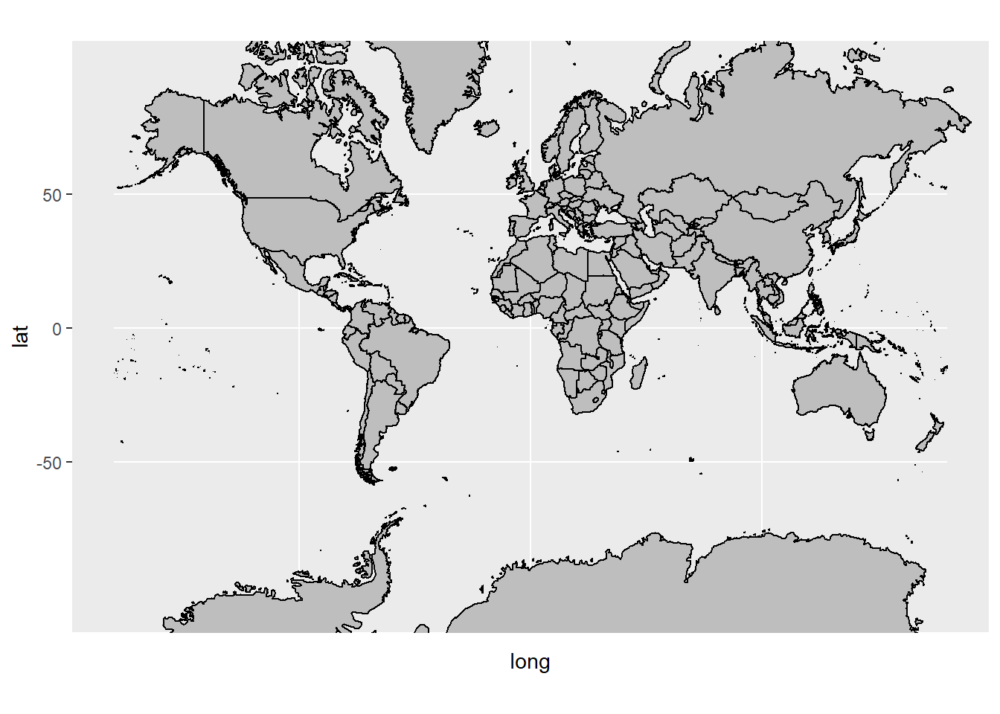
Next, we want to add information of each country on the map. For example, we want to show the number of confirmed COVID-19 cases.
The csv format data can be access through from the following website:
Let’s first take a look at the data:
covid_world=covid_world[,.(iso_code,continent,location,date,total_cases,new_cases,total_deaths,new_deaths,total_tests_per_thousand,people_vaccinated_per_hundred)]
head(covid_world)## iso_code continent location date total_cases new_cases total_deaths
## 1: AFG Asia Afghanistan 2020-02-24 1 1 NA
## 2: AFG Asia Afghanistan 2020-02-25 1 0 NA
## 3: AFG Asia Afghanistan 2020-02-26 1 0 NA
## 4: AFG Asia Afghanistan 2020-02-27 1 0 NA
## 5: AFG Asia Afghanistan 2020-02-28 1 0 NA
## 6: AFG Asia Afghanistan 2020-02-29 1 0 NA
## new_deaths total_tests_per_thousand people_vaccinated_per_hundred
## 1: NA NA NA
## 2: NA NA NA
## 3: NA NA NA
## 4: NA NA NA
## 5: NA NA NA
## 6: NA NA NA## Classes 'data.table' and 'data.frame': 114995 obs. of 10 variables:
## $ iso_code : chr "AFG" "AFG" "AFG" "AFG" ...
## $ continent : chr "Asia" "Asia" "Asia" "Asia" ...
## $ location : chr "Afghanistan" "Afghanistan" "Afghanistan" "Afghanistan" ...
## $ date : IDate, format: "2020-02-24" "2020-02-25" ...
## $ total_cases : num 1 1 1 1 1 1 1 1 2 4 ...
## $ new_cases : num 1 0 0 0 0 0 0 0 1 2 ...
## $ total_deaths : num NA NA NA NA NA NA NA NA NA NA ...
## $ new_deaths : num NA NA NA NA NA NA NA NA NA NA ...
## $ total_tests_per_thousand : num NA NA NA NA NA NA NA NA NA NA ...
## $ people_vaccinated_per_hundred: num NA NA NA NA NA NA NA NA NA NA ...
## - attr(*, ".internal.selfref")=<externalptr>## iso_code continent location date
## Length:114995 Length:114995 Length:114995 Min. :2020-01-01
## Class :character Class :character Class :character 1st Qu.:2020-07-25
## Mode :character Mode :character Mode :character Median :2020-12-18
## Mean :2020-12-11
## 3rd Qu.:2021-05-02
## Max. :2021-09-06
##
## total_cases new_cases total_deaths new_deaths
## Min. : 1 Min. :-74347 Min. : 1 Min. :-1918
## 1st Qu.: 1776 1st Qu.: 2 1st Qu.: 63 1st Qu.: 0
## Median : 17999 Median : 86 Median : 542 Median : 2
## Mean : 1323061 Mean : 6389 Mean : 34173 Mean : 146
## 3rd Qu.: 192856 3rd Qu.: 892 3rd Qu.: 4713 3rd Qu.: 18
## Max. :221211222 Max. :905932 Max. :4576372 Max. :17977
## NA's :5536 NA's :5539 NA's :16134 NA's :15979
## total_tests_per_thousand people_vaccinated_per_hundred
## Min. : 0.00 Min. : 0.00
## 1st Qu.: 18.03 1st Qu.: 3.30
## Median : 91.11 Median : 15.11
## Mean : 401.32 Mean : 23.45
## 3rd Qu.: 375.29 3rd Qu.: 40.29
## Max. :13230.12 Max. :117.71
## NA's :65196 NA's :91556We need to clean the date into the correct format before any analysis: Examine extreme values
## iso_code continent location date total_cases
## 1: ATG North America Antigua and Barbuda 2020-07-03 68
## 2: ATG North America Antigua and Barbuda 2021-05-09 1231
## 3: OWID_ASI Asia 2020-08-26 6604021
## 4: OWID_ASI Asia 2020-08-27 6707611
## 5: OWID_ASI Asia 2020-08-28 6811518
## ---
## 1655: OWID_WRL World 2021-09-04 220348745
## 1656: OWID_WRL World 2021-09-05 220775393
## 1657: OWID_WRL World 2021-09-06 221211222
## 1658: YEM Asia Yemen 2020-08-11 1831
## 1659: ZWE Africa Zimbabwe 2020-05-02 34
## new_cases total_deaths new_deaths total_tests_per_thousand
## 1: -1 3 0 NA
## 2: -1 32 0 NA
## 3: 112974 135017 1682 NA
## 4: 103590 136658 1641 NA
## 5: 103907 138253 1595 NA
## ---
## 1655: 480942 4561996 7736 NA
## 1656: 426648 4568456 6460 NA
## 1657: 435829 4576372 7916 NA
## 1658: -1 523 5 NA
## 1659: -6 4 0 NA
## people_vaccinated_per_hundred
## 1: NA
## 2: NA
## 3: NA
## 4: NA
## 5: NA
## ---
## 1655: 40.33
## 1656: 40.47
## 1657: 40.61
## 1658: NA
## 1659: NAClean up the data:
covid_world[,date:=ymd(date)]
# in the world map data, United States is named USA
covid_world[location=="United States",location:="USA"]
# clean up the negative new cases as missing value
covid_world[new_cases<0,new_cases:=NA] Use a line chart to show the number of new cases over time:
ggplot(covid_world)+
geom_line(aes(date, new_cases, color=location),show.legend = FALSE)+
theme_classic()## Warning: Removed 5538 row(s) containing missing values (geom_path).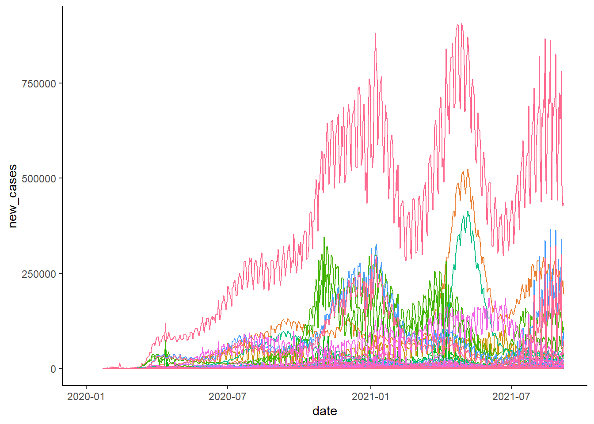
Use a line chart to show the number of new cases over time:
ggplot(covid_world[location%in%c("United Kingdom","USA","Italy","Brazil","Korean","China")])+
geom_line(aes(date, new_cases, color=location))+
theme_classic()## Warning: Removed 2 row(s) containing missing values (geom_path).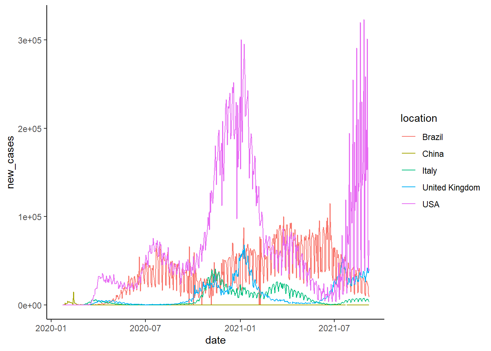
To plot the map of new cases in each day, we need to first prepare the map data to include the COVID-19 cases informatin.
# define any date you want to inquiry
today=ymd("2020-06-19")
# subset the covid dataset to select the above date and relevant columns
covid_today=covid_world[date==today,.(location,continent,date,total_cases,new_cases, total_deaths, total_tests_per_thousand)]
# combine the map data file
my_map = merge(world_map,covid_today, by.x="region", by.y ="location", all.x = TRUE)
head(my_map)## region long lat group order subregion continent date
## 1: Afghanistan 74.89131 37.23164 2 12 <NA> Asia 2020-06-19
## 2: Afghanistan 74.84023 37.22505 2 13 <NA> Asia 2020-06-19
## 3: Afghanistan 74.76738 37.24917 2 14 <NA> Asia 2020-06-19
## 4: Afghanistan 74.73896 37.28564 2 15 <NA> Asia 2020-06-19
## 5: Afghanistan 74.72666 37.29072 2 16 <NA> Asia 2020-06-19
## 6: Afghanistan 74.66895 37.26670 2 17 <NA> Asia 2020-06-19
## total_cases new_cases total_deaths total_tests_per_thousand
## 1: 27882 346 552 NA
## 2: 27882 346 552 NA
## 3: 27882 346 552 NA
## 4: 27882 346 552 NA
## 5: 27882 346 552 NA
## 6: 27882 346 552 NA# It is vital that the map data is ordered by the order column. Otherwise, the map will be messed up.
my_map[order(order)]## region long lat group order subregion continent date
## 1: Aruba -69.89912 12.45200 1 1 <NA> <NA> <NA>
## 2: Aruba -69.89571 12.42300 1 2 <NA> <NA> <NA>
## 3: Aruba -69.94219 12.43853 1 3 <NA> <NA> <NA>
## 4: Aruba -70.00415 12.50049 1 4 <NA> <NA> <NA>
## 5: Aruba -70.06612 12.54697 1 5 <NA> <NA> <NA>
## ---
## 99334: Vatican 12.43838 41.90620 1627 100960 enclave Europe 2020-06-19
## 99335: Vatican 12.43057 41.90547 1627 100961 enclave Europe 2020-06-19
## 99336: Vatican 12.42754 41.90073 1627 100962 enclave Europe 2020-06-19
## 99337: Vatican 12.43057 41.89756 1627 100963 enclave Europe 2020-06-19
## 99338: Vatican 12.43916 41.89839 1627 100964 enclave Europe 2020-06-19
## total_cases new_cases total_deaths total_tests_per_thousand
## 1: NA NA NA NA
## 2: NA NA NA NA
## 3: NA NA NA NA
## 4: NA NA NA NA
## 5: NA NA NA NA
## ---
## 99334: 12 0 NA NA
## 99335: 12 0 NA NA
## 99336: 12 0 NA NA
## 99337: 12 0 NA NA
## 99338: 12 0 NA NANow, we are ready to plot the data:
g<-ggplot(my_map, aes(x=long,y=lat,group=group))+
geom_polygon(aes(fill=new_cases))+
geom_path()+
coord_map(xlim=c(-180,180))+
labs(x = NULL, y = NULL, title = paste("New confirmed cases worldwide: ", today),fill="New Cases")
g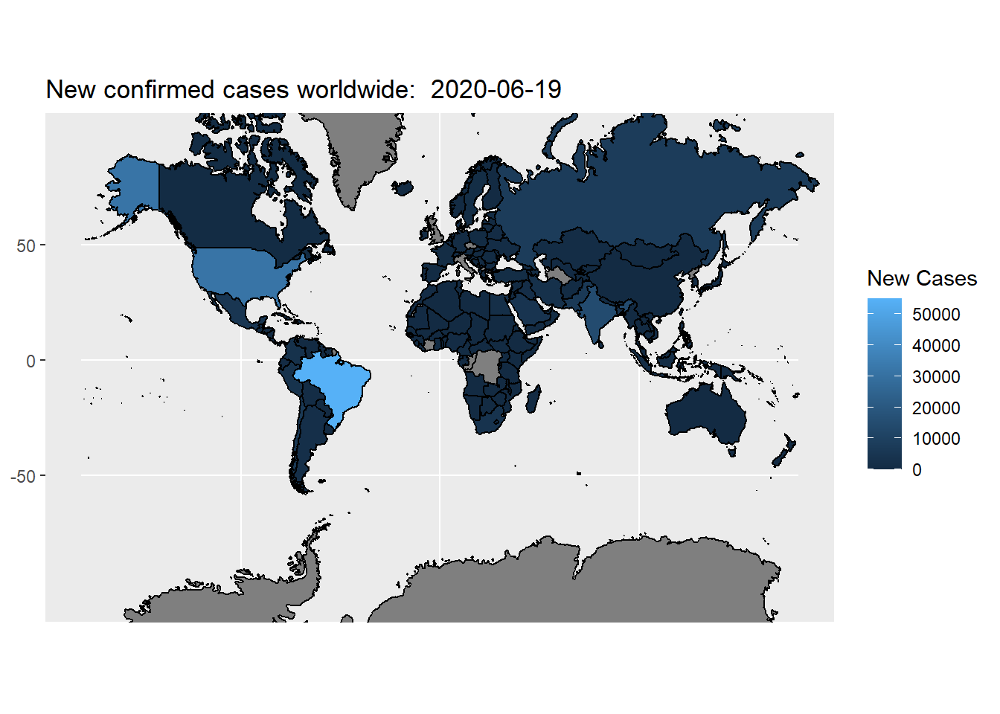
The default fill color scheme is not quite differentiable. We can use scale_fill_gradient() function to creates a two colour gradient (low-high):
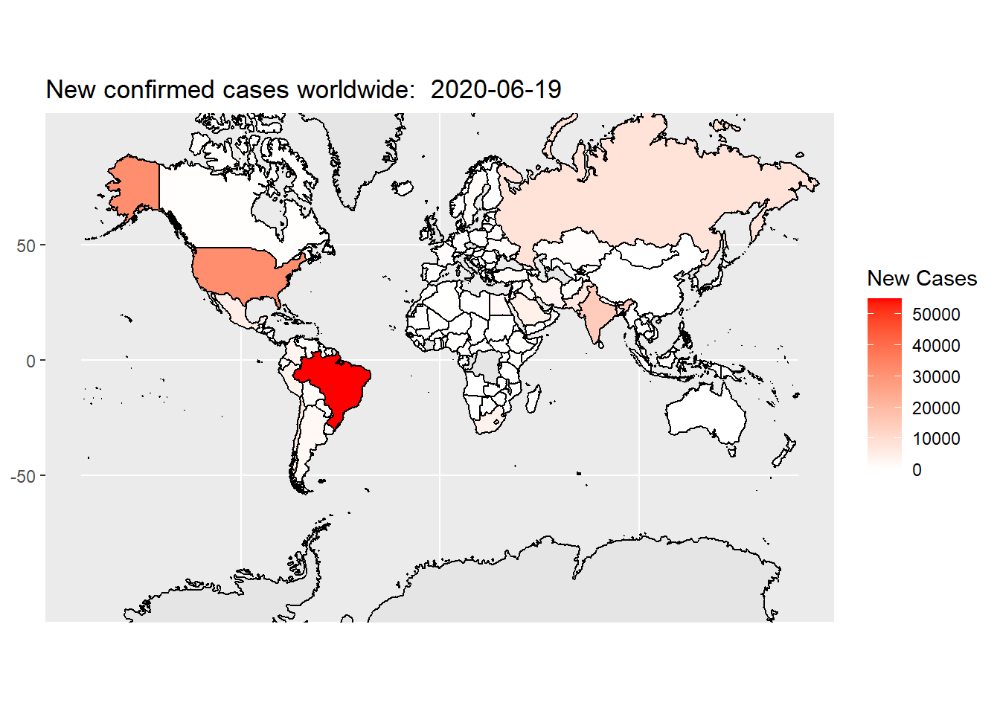
In the above code, we set color scheme of “white” representing low quantity, “red” representing high quantity, the missing value is represented by grey.
Here is another commonly used color scheme. In the code below, heat.colors(10) generate a heat color scheme from white, yellow to red with 10 steps in between. rev() reserves this color scheme because we want to use red to represent high quantity, and yellow to represent low quantity.
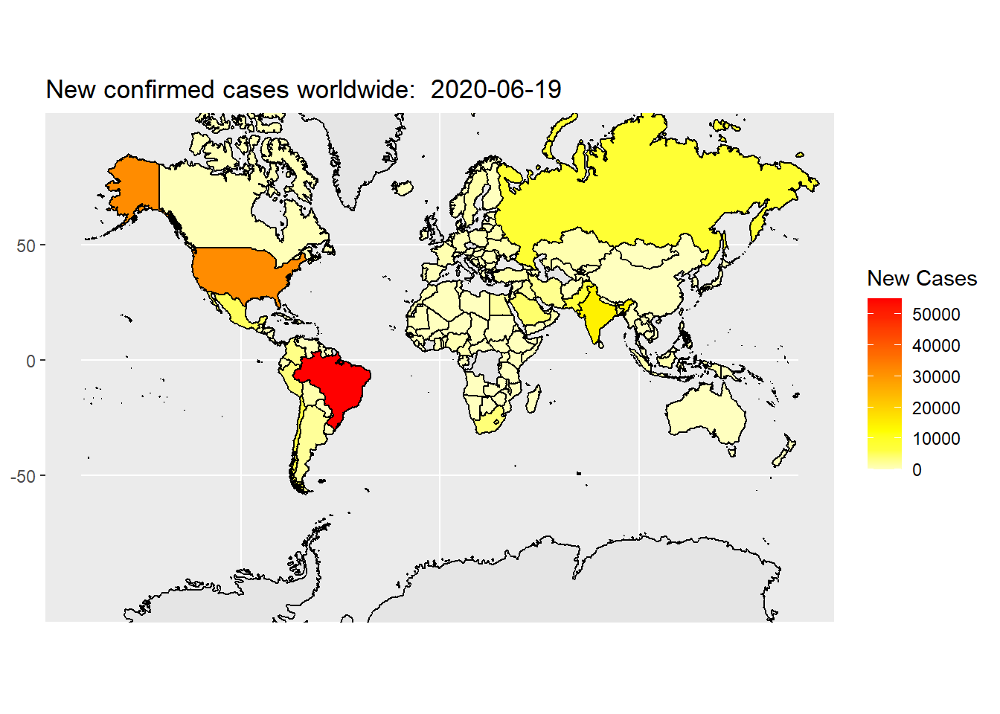
Now, the map looks OK, but we want to clean the extra grid and axis labels. We can do that by change the theme of the plot. Below is a reusable map theme that is readily to use.
Define the theme of map:
theme_map <- function(...) {
theme_minimal() +
theme(
axis.line = element_blank(),
axis.text.x = element_blank(),
axis.text.y = element_blank(),
axis.ticks = element_blank(),
axis.title.x = element_blank(),
axis.title.y = element_blank(),
panel.grid.minor = element_blank(),
panel.grid.major = element_blank(),
plot.background = element_rect(fill = "white", color = NA),
panel.background = element_rect(fill = "gray99", color = NA),
legend.background = element_rect(fill = "white", color = NA),
panel.border = element_blank(),
legend.position = "right",
...
)
}Apply the self-defined map theme:
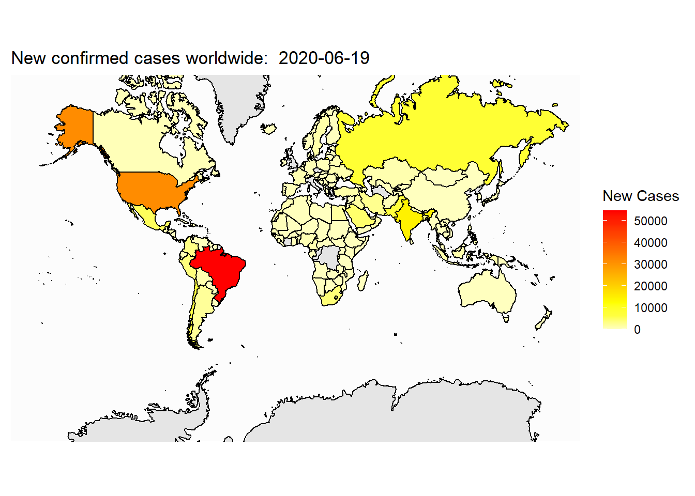
Now, let’s plot the total cases on the map:
ggplot(my_map, aes(x=long,y=lat,group=group))+
geom_polygon(aes(fill=total_cases))+
geom_path()+
coord_map(xlim=c(-180,180))+
labs(x = NULL, y = NULL, title = paste("Total cases worldwide: ", today), fill="Total Cases")+
scale_fill_gradientn(colours=rev(heat.colors(10)),na.value="grey90")+
theme_map()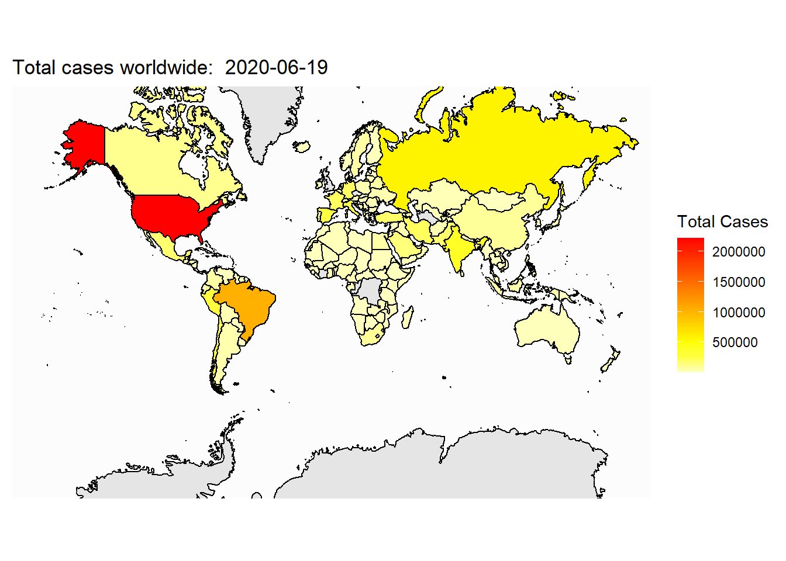
## Saving 7 x 5 in image16.2 Draw US map
In most of the situation, we focus on US as well as states in US. Here we show how to create US/States map. First, we need to load the US map data.
## long lat group order region subregion
## 1: -87.46201 30.38968 1 1 alabama <NA>
## 2: -87.48493 30.37249 1 2 alabama <NA>
## 3: -87.52503 30.37249 1 3 alabama <NA>
## 4: -87.53076 30.33239 1 4 alabama <NA>
## 5: -87.57087 30.32665 1 5 alabama <NA>
## 6: -87.58806 30.32665 1 6 alabama <NA>Next, we can plot the US map.
ggplot(data=states_map)+
geom_polygon(aes(x=long, y=lat, group=group), color="black", fill="gray90") +
coord_map() +
theme_map()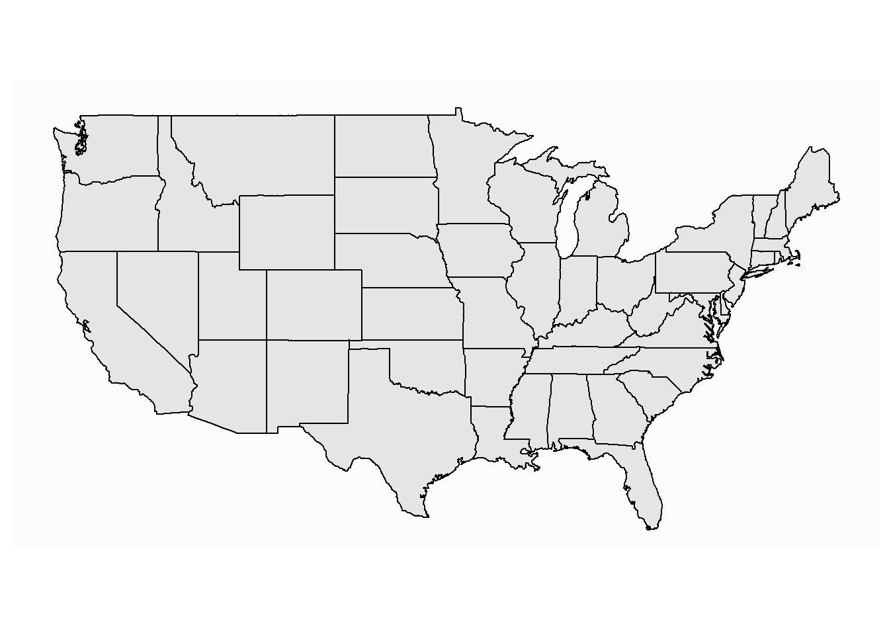
We can add the information of each state on the map. E.g., we can fill each state to a color corresponding to its number of new COVID-19 confirmed cases.
First, we need to download the COVID-19 data for each state from the web.
# the data is in the following web-page
url = 'https://raw.githubusercontent.com/nytimes/covid-19-data/master/us-states.csv'
covid_US=fread(url)Examine the data through head():
## date state fips cases deaths
## 1: 2020-01-21 Washington 53 1 0
## 2: 2020-01-22 Washington 53 1 0
## 3: 2020-01-23 Washington 53 1 0
## 4: 2020-01-24 Illinois 17 1 0
## 5: 2020-01-24 Washington 53 1 0
## 6: 2020-01-25 California 6 1 0Clean the data before any analysis. First, in map_state, the state name is lower case; here state name has upper case, we need to make it also lower case so that we can merge the two datasets. Second, we need to convert date from string to date.
## date state fips cases deaths
## 1: 2020-01-21 washington 53 1 0
## 2: 2020-01-22 washington 53 1 0
## 3: 2020-01-23 washington 53 1 0
## 4: 2020-01-24 illinois 17 1 0
## 5: 2020-01-24 washington 53 1 0
## 6: 2020-01-25 california 6 1 0Merge the state map data with the covid-19 data.
select_date="2020-07-04"
covid_US_today=covid_US[date==select_date]
map_covid_state = merge(states_map,covid_US_today, by.x="region", by.y="state", all.x = TRUE)
head(map_covid_state)## region long lat group order subregion date fips cases
## 1: alabama -87.46201 30.38968 1 1 <NA> 2020-07-04 1 42862
## 2: alabama -87.48493 30.37249 1 2 <NA> 2020-07-04 1 42862
## 3: alabama -87.52503 30.37249 1 3 <NA> 2020-07-04 1 42862
## 4: alabama -87.53076 30.33239 1 4 <NA> 2020-07-04 1 42862
## 5: alabama -87.57087 30.32665 1 5 <NA> 2020-07-04 1 42862
## 6: alabama -87.58806 30.32665 1 6 <NA> 2020-07-04 1 42862
## deaths
## 1: 1007
## 2: 1007
## 3: 1007
## 4: 1007
## 5: 1007
## 6: 1007Next, we can plot the US map.
ggplot(map_covid_state)+
geom_polygon(aes(x=long, y=lat, group=group, fill=cases), color="black") +
coord_map() +
scale_fill_gradientn(colours=rev(heat.colors(10)),na.value="grey90")+
theme_map()+
labs(title=paste("Total confimed cases in US: ", select_date, sep=""), fill="New Cases")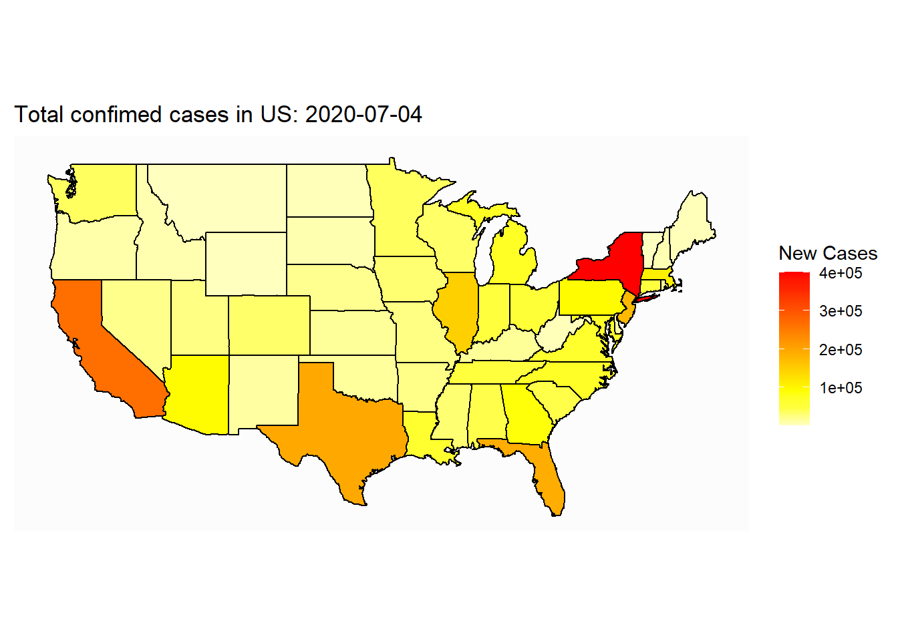
## Saving 7 x 5 in imageSometime, we want to add text information on the map:
ggplot(map_covid_state)+
geom_polygon(aes(x=long, y=lat, group=group, fill=cases), color="black") +
coord_map() +
scale_fill_gradientn(colours=rev(heat.colors(10)),na.value="grey90")+
theme_map()+
labs(title=paste("Total confimed cases in US: ", select_date, sep=""), fill="New Cases")## Saving 7 x 5 in image16.3 draw US county map
Sometime, we only want to zoom in to look at a subset of states at the county level. Here we show how to draw US county map.
First, we need to extract the US county map data:
## long lat group order region subregion
## 1: -86.50517 32.34920 1 1 alabama autauga
## 2: -86.53382 32.35493 1 2 alabama autauga
## 3: -86.54527 32.36639 1 3 alabama autauga
## 4: -86.55673 32.37785 1 4 alabama autauga
## 5: -86.57966 32.38357 1 5 alabama autauga
## 6: -86.59111 32.37785 1 6 alabama autaugaNext, we can draw US county map:
ggplot(data=county_map)+
geom_polygon(aes(x=long, y=lat, group=group), color="gray")+
coord_map() +
theme_map()+
labs(title="US county map")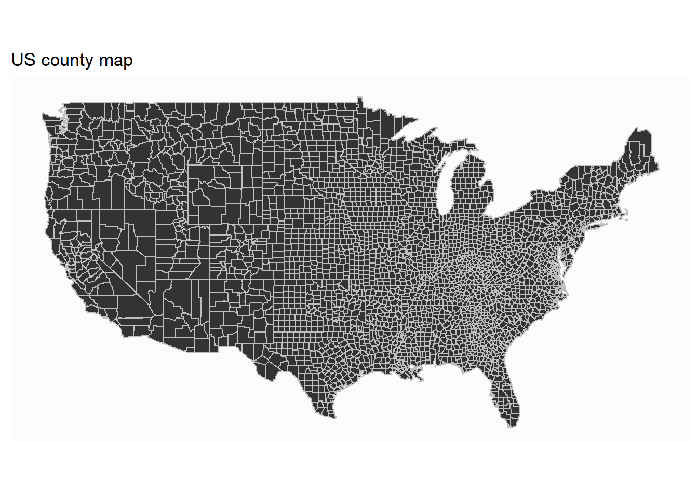
Similarly, we can include county information to the map. Take covid-19 as an example:
First, we need to download the data from the following address:
covid_county=fread("https://github.com/nytimes/covid-19-data/raw/master/us-counties.csv")
head(covid_county)## date county state fips cases deaths
## 1: 2020-01-21 Snohomish Washington 53061 1 0
## 2: 2020-01-22 Snohomish Washington 53061 1 0
## 3: 2020-01-23 Snohomish Washington 53061 1 0
## 4: 2020-01-24 Cook Illinois 17031 1 0
## 5: 2020-01-24 Snohomish Washington 53061 1 0
## 6: 2020-01-25 Orange California 6059 1 0Clean up the data for analysis:
covid_county[,date:=ymd(date)]
covid_county[,county:=tolower(county)]
covid_county[,state:=tolower(state)]
head(covid_county)## date county state fips cases deaths
## 1: 2020-01-21 snohomish washington 53061 1 0
## 2: 2020-01-22 snohomish washington 53061 1 0
## 3: 2020-01-23 snohomish washington 53061 1 0
## 4: 2020-01-24 cook illinois 17031 1 0
## 5: 2020-01-24 snohomish washington 53061 1 0
## 6: 2020-01-25 orange california 6059 1 0Merge with the map data
# choose the date to map
select_date="06-21-2020"
covid_county2<-covid_county[date==mdy(select_date)]
map_covid_county = merge(county_map,covid_county2, by.x=c("region","subregion"), by.y=c("state","county"), all.x = TRUE)
head(map_covid_county)## region subregion long lat group order date fips cases
## 1: alabama autauga -86.50517 32.34920 1 1 2020-06-21 1001 434
## 2: alabama autauga -86.53382 32.35493 1 2 2020-06-21 1001 434
## 3: alabama autauga -86.54527 32.36639 1 3 2020-06-21 1001 434
## 4: alabama autauga -86.55673 32.37785 1 4 2020-06-21 1001 434
## 5: alabama autauga -86.57966 32.38357 1 5 2020-06-21 1001 434
## 6: alabama autauga -86.59111 32.37785 1 6 2020-06-21 1001 434
## deaths
## 1: 9
## 2: 9
## 3: 9
## 4: 9
## 5: 9
## 6: 9Next, we can draw US county map:
ggplot(map_covid_county)+
geom_polygon(aes(x=long, y=lat, fill=cases, group=group), color="gray80")+
coord_map() +
scale_fill_gradientn(colours=rev(heat.colors(10)),na.value="grey90")+
theme_map()+
labs(title=paste("Total confirmed cases in US: ", select_date), fill="total cases")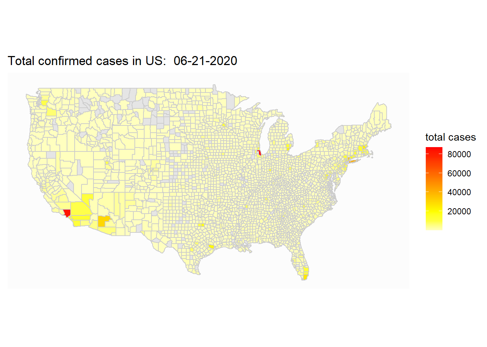
The county map is mostly useful when we want to zoom in to look at particular state.
select_state=c("nebraska")
ggplot(map_covid_county[region%in%select_state])+
geom_polygon(aes(x=long, y=lat, fill=cases, group=group), color="gray80")+
coord_map() +
scale_fill_gradientn(colours=rev(heat.colors(10)),na.value="grey90")+
theme_map()+
labs(title=paste("Total confirmed cases in ", select_state, " : ", select_date), fill="Total Cases")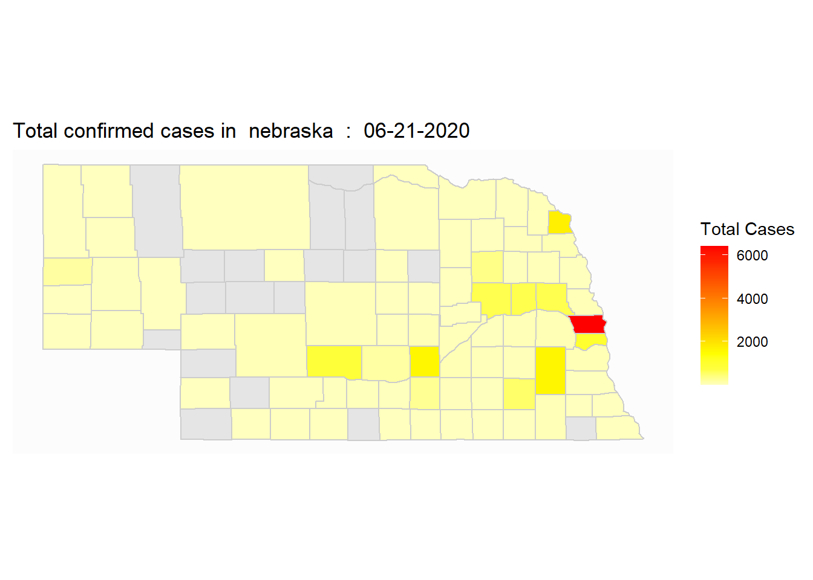
## Saving 7 x 5 in image16.4 Summary
learn to make maps with ggplot2: world map, US state maps, US county maps
learn to include information about on the map.
apply data.table to join data.table.
Use theme to adjust the appearance of the map